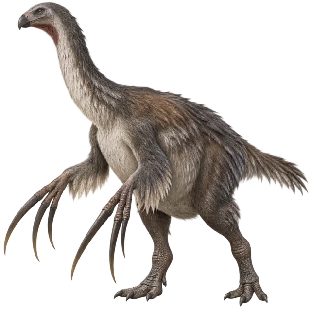
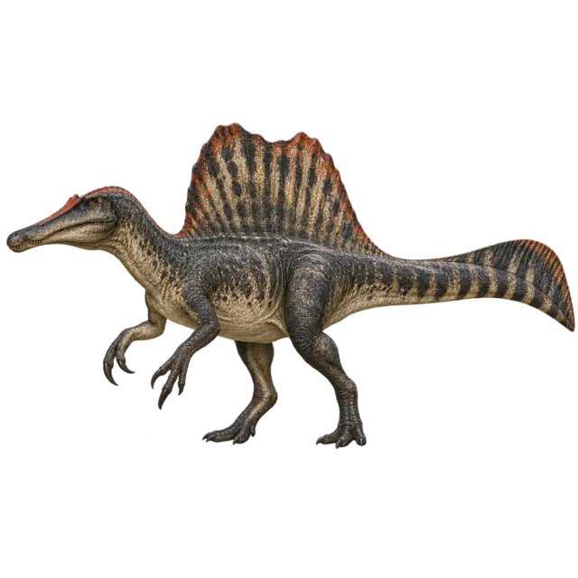

STANDARDTriceratopsLv 18
STANDARDTriceratopsLv 18
Cyfrowa wyprawa paleontologiczna
Nie ucz się nazw. Odkrywaj ślady.
Wchodzisz do świata, w którym wiedza napędza kolekcję. Lekcje i gry dają XP, XP rozgrzewa jaja, duplikaty rozwijają dinozaury do 100 poziomu, a rozwinięta kolekcja przyspiesza dalszą naukę.
- 46
- taksonów do odblokowania
- 7
- wariantów każdego okazu
- 100
- poziomów każdej karty

Ślad w kości
Grube, głęboko osadzone zęby tyranozaura były przystosowane do bardzo dużych obciążeń.
Przewiń przez trzy światy.
Każda era odsłania inną warstwę środowiska i inny trop. Kliknij epokę, aby zobaczyć ukrytą ciekawostkę.
TRIASPangea nadal łączyła większość lądów.
Wczesne dinozaury dzieliły ekosystemy z wieloma innymi liniami archozaurów, które później zniknęły.
Interaktywne wykopalisko
Odkop cztery rzeczy, które mówią więcej niż sama kość.
W paleontologii liczy się kontekst. Klikaj znaleziska i odsłaniaj informacje ukryte pod osadem.
Wybierz znalezisko.
Warstwa odsłoni jego znaczenie.
Każda rzecz na stronie napędza następną.
01NaukaLekcja / gra
→02XP× mnożnik kolekcji
→03Jajoaktywna inkubacja
→04Wykluciegatunek + wariant
→05Duplikatlevel karty
→06Bonus XPszybszy progres
Kolekcja żyje
Ten sam gatunek. Zupełnie inny okaz.
Warianty liczą się jako osobne collectible. Każdy ma własny efekt karty i nieco inne tempo rozwoju.
STANDARDTriceratopsLv 18 SHINYVelociraptorLv 42
SHINYVelociraptorLv 42
MUTACJA BIOTherizinosaurusLv 61
CYBERSpinosaurusLv 77PRIMALTyrannosaurusLv 100Pułapka badacza
Które z tych zwierząt było dinozaurem?
Jedna odpowiedź. Reszta to bliscy lub odlegli krewni, których popkultura często wrzuca do jednego worka.
Wybierz odpowiedź.
Wynik pojawi się tutaj.